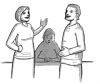
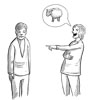
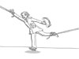
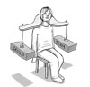

Härskartekniker är olika praktiker som används för att bedriva makt över någon, sätta någon på plats eller förtrycka någon i syfte att hävda sig själv. Härskartekniker kan utövas både av kvinnor och män och drabbar både kvinnor och män. Många av oss känner säkert att vi blivit utsatta för någon eller flera härskartekniker i vår vardag och känt oss kränkta av personer i vår omgivning. Kanske känner vi också att vi använt oss av några av dessa härskartekniker själva i någon situation, möjligen utan att vi varit medvetna om det. Att förstå och lära sig se härskartekniker handlar om att förstå hur makt fungerar och hur det kan ta sig i uttryck på till exempel en arbetsplats. Det är väldigt lätt att tro att det är jag själv som har gjort eller sagt något fel eller betett sig olämpligt när jag blir utsatt för en härskarteknik. Så är det inte! Att göra härskartekniker synliga innebär också att effekterna av dem kan motarbetats.
Vi ska nu titta närmare på olika härskartekniker se vilka möjligheter som finns för att motverka och förebygga dem.
Härskartekniker, motstrategier och bekräftartekniker
Härskartekniker, motstrategier och bekräftartekniker
Att förstå teorin om härskartekniker är nyckeln till att kunna utreda vad som händer när någon, ofta en kvinna, får ett orättvist bemötande, till exempel blir förlöjligad. Teorin är utarbetat av Berit Ås, professor i socialpsykologi, och identifierar fem olika uttryck för härskartekniker. Dessa är osynliggörande, förlöjligande, undanhållande av information, dubbelbestraffning och påföljande av skuld och skam (Ås 1978). Dessa härskartekniker har även kompletterats med två ytterligare härskartekniker; objektifiering och våld eller hot om våld (Ås 2004). Berit Ås identifierade de fem ursprungliga härskarteknikerna under 1970-talet och de förklarar på vilket sätt kvinnor blir härskade över av män. Sedan dess har ytterligare teorier och tekniker utvecklats av andra forskare och författare och fokuserar på hur vi alla, medvetet eller omedvetet, kan utöva härskartekniker.
Empowerment Nätverket vid Stockholms Universitet (ENSU) har även identifierat motstrategier och bekräftartekniker som kopplas samman med de olika härskarteknikerna. Motstrategier är olika sätt att bemöta härskartekniker när de inträffar och bekräftartekniker kan användas för att förändra sociala klimat. Poängen med dessa tekniker är att ge verktyg till personer som blir utsatta för härskartekniker att förändra situationen och att ta makten att påverka sin situation. Motstrategier och bekräftartekniker är sätt för oss att långsiktigt förändra de felaktigheter som vi stöter på i vårt sociala liv, både i informella sammanhang och på jobbet (Jonasson et. al. 2004). Det är samtidigt viktigt att påpeka att eftersom användandet av härskartekniker är en maktyttring, det vill säga ett sätt för någon att utöva makt över någon annan, kan det vara mycket svårt för den som blir härskad över att återta makt i den positionen som hen befinner sig i. Att känna sig förminskad och kränkt är en naturlig reaktion och vi har rätt att känna oss på det viset när någon behandlar oss illa. Att stå upp för sig själv och agera lugnt, behärskat och, framförallt, agera direkt i stunden kan därför vara mycket svårt. Klandra inte dig själv om du kommer på vad du skulle ha gjort först när situationen är över!
Vi kommer nu att gå igenom några härskartekniker och förslag på motstrategier och/eller bekräftartekniker. Vi börjar med att utgå från de härskartekniker som Berit Ås identifierat.
Osynliggörande härskartekniker går ut på att osynliggöra dig och att förmedla till dig att du inte finns eller att det du gör eller säger inte är viktigt i sammanhanget. Syftet med denna härskarteknik är att få dig att känna dig osäker, betydelselös och mindre viktig. Osynliggörande härskartekniker kan ske öppet och direkt, till exempel att du inte blir presenterad för andra i en grupp. Osynliggörande strategier kan också ske indirekt och subtilt, såsom att uppmärksamheten inte är riktad mot dig när du pratar eller håller ett föredrag eller att ingen visar intresse eller ställer frågor när ditt föredrag är över.

Motstrategi
En motstrategi för osynliggörande tekniker är att ta plats. Om du blir utsatt för osynliggörande är det viktigt att försöka agera direkt och att lugnt säga ifrån och visa att du inte accepterar sättet du blir behandlad. Om en person inte lyssnar på ditt föredrag kan du lugnt säga att det är viktigt för dig att alla lyssnar på vad du har att säga.
Bekräftarteknik
Nyckeln för att motverka en grogrund för osynliggörande tekniker och för att främja en kultur på arbetsplatsen som präglas av respekt, är att synliggöra de personer du arbetar med eller på andra sätt kommer i kontakt med. Lyssna på dina kollegor, bekräfta dem och ge konstruktiv kritik så minskas riskerna för att osynliggörande tekniker ska kunna användas på arbetsplatsen!
Förlöjligande tekniker är när personer blir hånade eller utskrattade på grund av attribut eller egenskaper som tillskrivs deras kön. Kanske har du hört när kvinnor blir liknade efter djur, till exempel yra höns eller dumma kossor. Eller när kvinnor sägs vara extra känsliga eller baktalande och skvallriga. Det finns väldigt många fler liknande epitet som används för att beskriva kvinnor men inte alls lika många som används för att göra sig löjlig över mäns beteende eller reaktioner. Ibland fungerar förlöjligande tekniker att du blir infantiliserad, till exempel kallad för "lilla gumman". Förlöjligande tekniker är tänkta att vara roliga och skämtsamma men eftersom det sker på din bekostnad blir resultatet att du blir förlöjligad och förminskad.

Motstrategi
En motstrategi för att bemöta förlöjligande tekniker är att ifrågasätta personen eller personerna som försöker förminska eller förlöjliga dig. Låt inte skämten passera utan att du kommenterar och ifrågasätter dem och skratta inte med!
Bekräftarteknik
För att undvika att förlöjligande härskartekniker får utrymme på din arbetsplats är det viktigt att respektera och stötta varandra. Bemöt varandra på ett seriöst sätt och ge utrymme åt dina kollegor, fråga dem om deras synpunkter och åsikter!
Denna typ av härskarteknik inträffar när en grupp undanhåller information eller behandlar viktiga frågor när vissa personer inte är närvarande. Detta kan ske genom att beslut fattas på informella platser där det är underförstått att vissa personer inte bör vara, med till exempel i omklädningsrummet efter innebandymatchen. Denna typ av teknik kan visa sig genom att exempelvis män vänder sig till andra män per automatik och att kvinnor inte får tillgång till mötesanteckningar, protokoll, agendor och så vidare. När det sedan är dags för beslutet att klubbas igenom kan det vara för sent att komma med sina åsikter.
Motstrategi
Undanhållande av information
Motstrategin för denna typ av härskarteknik är att kräva korten på bordet och att tydligt påpeka att inga beslut ska tas utan din medverkan. Det är inte du som är dålig på att införskaffa information, det är snarare någon som försöker bedriva makt över dig genom att undanhålla information. Ställ krav på genomskinlighet genom hela beslutsprocessen.
Bekräftarteknik
Bekräftartekniken är i det här fallet motsatsen till att undanhålla information, nämligen att informera. Kanske är vi inte i alla lägen medvetna om när information undanhålls eller när vissa personer inte har haft möjlighet att föra sin talan. Men det är kränkande att känna att vi inte har blivit tillfrågade och att beslut har tagits över våra huvuden. Chefen har i detta fall ett stort ansvar för att till exempel en beslutsprocess ska gå rätt till och att information ska förankras hos alla som är berörda.
Dubbel bestraffning handlar om att vad du än gör så blir det fel, helt enkelt en omöjlig ekvation. Damn if you do and damn if you don´t! Oftast används tekniken mot grupper som vi har fördomar mot. Det kan handla om att du anses framfusig när du är spontan eller osäker när du är eftertänksam eller att du förväntas arbeta över på jobbet och samtidigt ha tid att hämta barnen tidigt på förskolan.

Motstrategi
Som motstrategi till denna härskarteknik kan du dels fundera över och bestämma vad som är viktigt för dig och vad du prioriterar just nu. Det andra ledet är att göra dina prioriteringar tydliga för andra. Det handlar om att bryta mönstret och göra klart att du inte kan vara överallt och göra allt samtidigt!
Bekräftarteknik
Som bekräftarteknik nämns dubbel belöning, det vill säga att utgå från att alla gör så gott de kan utifrån sina förutsättningar. Om våra kollegor, vår familj och våra vänner känner till våra prioriteringar och våra förutsättningar är det svårare att ha inställningen att vad vi än gör så är det fel. På så vis finns det mindre grogrund för att utöva dubbel bestraffning som härskarteknik.
Påförande av skuld och skam är nära besläktad med dubbelbestraffning och handlar om att någon tillskriver dig skuld och skam för en egenskap eller händelse som du inte är ansvarig för. Påförande av skuld och skam kan beskrivas som resultatet av att ha blivit utsatt för de föregående fyra härskarteknikerna. Att bli utsatt för härskartekniker får dig att känna att allt är ditt fel och att det är dig det är fel på. Konkret kan det handla om att kvinnor känner skuld för att de inte både hinner med familj och karriär på det sätt som förväntas av dem. Påförande av skuld och skam är med andra ord en härskarteknik som upplevs komma från "dig själv".

Motstrategi
Skuld och skam bild
Motstrategin till påförande av skuld och skam handlar främst om att försöka intellektualisera dina egna känslor av skuld och skam och se varifrån de kommer. Försök se till situationen då du kände dessa känslor, vad hände egentligen och vilken roll spelade personerna i din omgivning? Var det något de sa eller gjorde som fick dig att känna skuld och skam? Och varför kan de ha gjort det? Finns det vissa normer eller förutfattade meningar på din arbetsplats som fungerar som en grogrund för dina känslor? Kan dina känslor vara färgade av samhälleliga normer eller som ett uttryck av genussystemet?
Bekräftarteknik
För att undvika att vi blir påförda skuld och skam som sedan internaliseras och upplevs komma från oss själva är det viktigt att bekräfta och stödja varandra. Det är viktigt att förstå att vi lever i ett samhälle som på många sätt är ojämställt och att ansvaret för dina känslor inte endast kommer från dig själv utan påförs utifrån. Våra samhälleliga normer och genussystemet skapar olika förutsättningar för kvinnor och män och påverkar vår syn på varandra och oss själva.
Dessa är de fem härskartekniker som formulerats av Berit Ås och som har fått tillägg genom motstategier och bekräftartekniker av nätverket ENSU (Ås 1978, Jonasson et. al. 2004). Känner du igen dig i några av dem? Har du blivit utsatt för några av dem eller använt dig av någon av dem på din arbetsplats? Kanske kan du komma på andra typer av situationer där du har känt dig orättvist behandlad eller kränkt?
Författaren och retorikkonsulten Elaine Eksvärd (Bergqvist 2008) har identifierat fler härskartekniker som kan vara mer subtila än Berit Ås men som på samma sätt är kränkande att bli utsatt för. Vi ska nu gå igenom dem i tur och ordning.
Projiceringsmetoden
Projiceringsmetoden går ut på att du uttrycker ditt missnöje eller påtalar någonting men får av härskaren/härskarna veta att det egentligen är du som är problemet, eller att det är ditt problem att du känner som du gör. Fokus har därför förflyttats från det du ville ta upp eller kommentera till dig själv och dina känslor.
Komplimangmetoden
Kanske känner du igen dig i att du får en komplimang eller en klapp på axeln och vet redan i det skedet att det förväntas något extra av dig? Det kallas för komplimangmetoden. Det kan handla om att din chef eller kollega, innan hen ber dig jobba över, överöser dig med komplimanger. Trots komplimangen känner du istället en olustkänsla och en känsla av att du blir utnyttjad.
Stereotypmetoden
Stereotypmetoden innebär att du blir härskad över om du gör något som strider mot olika stereotyper. Det kan handla om att du gör något som går utanför normen för vad du borde göra beroende på till exempel ditt kön, din sexualitet eller din etnicitet. Det kan också handla om att den som härskar utgår från stereotyper och förutfattade meningar i samtal med dig vilket kan få dig att känna dig utanför eller inplacerad i ett fack. Ett exempel kan vara att dina kolleger talar om hur roligt det ska bli att gå på hockeymatch men du blir inte tillfrågad att följa med eftersom de antar att du inte är intresserad av hockey eftersom du är kvinna.
Uteslutningsmetoden
Uteslutningsmetoden har mycket gemensamt med härskartekniken osynliggörande. Uteslutningsmetoden handlar till exempel om att uppmärksamheten inte är riktad mot dig när du pratar eller att någon genast slutar lyssna på dig när någon annan kommer in i rummet. Kanske har du upplevt att du blir utesluten genom att någon upprepar det du just sa när ni står i en grupp? Du blir helt enkelt inte uppmärksammad när du borde bli det.
Hierarkimetoden
Den här metoden innebär att härskaren använder sitt överläge eller sitt underläge i hierarkin för att trycka ner någon. Det kan handla om att en chef använder sin maktposition mot sina anställda eller att du får titlar och epitet som är knutna ett stereotypiskt fack som du blir inplacerad i, till exempel kopplade till könskategorierna kvinna eller man.
Tidsmetoden
Tidsmetoden handlar om att tysta eller trycka ner någon genom att påpeka att du har varit med lägre än den andra personen har. Det kan handla om att du påpekar att du är äldre och därför har mer erfarenhet, att du har varit på arbetsplatsen längre och vet vad som fungerar eller att du har varit med i en grupp längre och därför bättre känner till gruppdynamiken. Denna metod används för att tysta ner andra och på så vis få övertaget.
Självförvållad härskarteknik
Självförvållad härskarteknik är olik de andra metoderna eftersom den handlar om att du i viss mån kan förtrycka dig själv genom att du nedvärderar det du gör eller säger, till exempel att du säger att "jag har en liten sak att säga men den kanske inte är så viktig och inte ska väl jag komma här och säga det". Genom att nedvärdera det du säger kan andra härskare få ett övertag över dig och på så vis utöva härskartekniker mot dig.